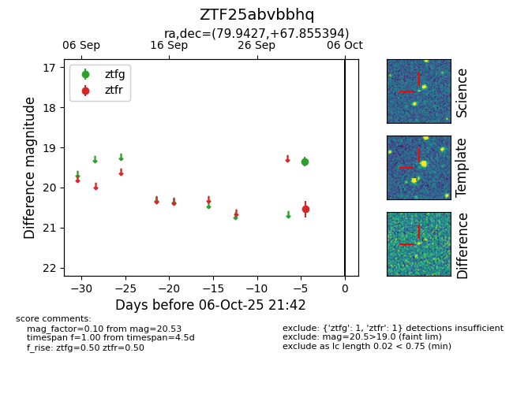

FINK: ZTF25abvbbhq
Lasair: ZTF25abvbbhq
ALeRCE: ZTF25abvbbhq
ZTF25abvbbhq (ztf,fink)
equatorial (ra, dec) = (79.9427,+67.85539)
galactic (l, b) = (144.2153,+16.96071)

last ztfg=19.35, ztfr=20.53
1 ztfg, 1 ztfr detections